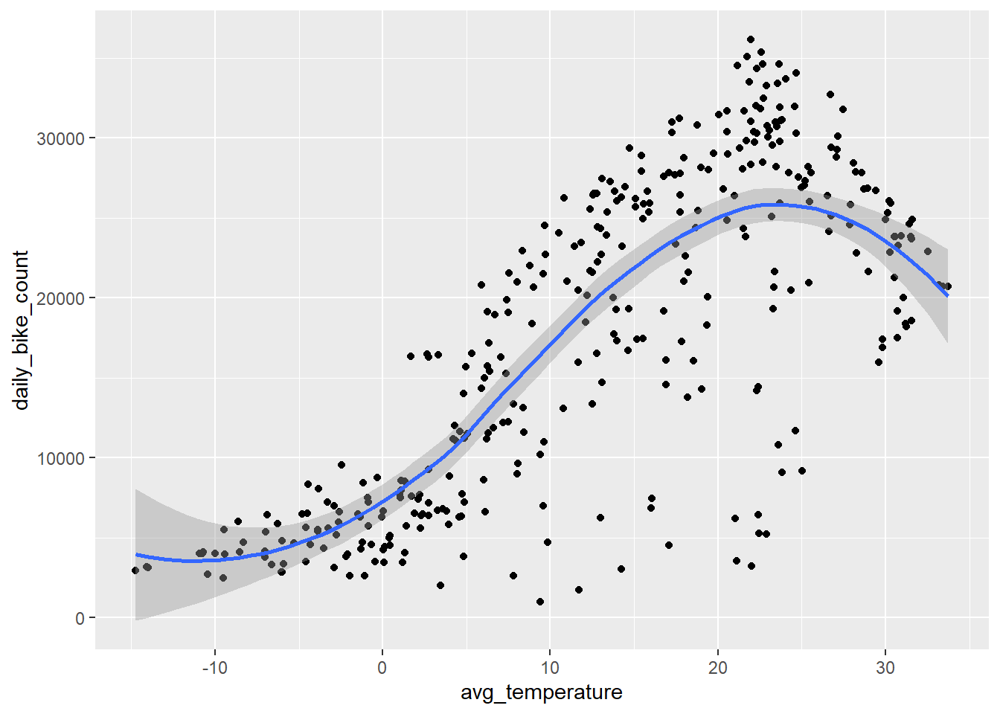
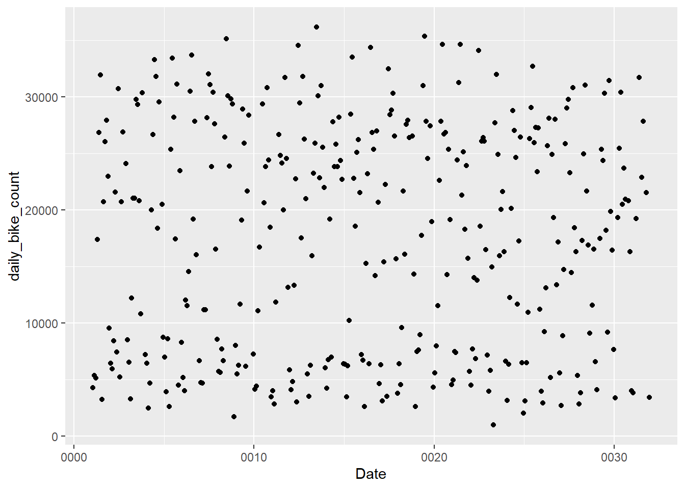

We showed our summary statistics on our numerical values earlier. But showing with our subsetted functional data. Showing our categorical counts. Some values are different since we subsetted functioning days.
# Subset where functioning day is truebike_data_functional <- bike_data |>filter(FunctioningDay =="Yes")#num functional databike_summary <- bike_data_functional |>summarize(across(where(is.numeric),list(count =~sum(!is.na(.x)),mean =~mean(.x),sd =~sd(.x),min =~min(.x),max =~max(.x),median =~median(.x) )))print(bike_summary)
Summarizing by groups of dates/seasons/holiday. Showing sum of bike count, rainfall, and snowfall. Also the mean of temperature, humidity, visibility, dew point, and uv radiation.
bike_data_daily <- bike_data_functional |>group_by(Date, Seasons, Holiday) |>summarize(# Sum of bike count, rainfall, and snowfalldaily_bike_count =sum(RentedBikeCount),total_rainfall =sum(Rainfall),total_snowfall =sum(Snowfall),# Avg of weather variablesavg_temperature =mean(Temperature),avg_humidity =mean(Humidity),avg_windspeed =mean(Windspeed),avg_visibility =mean(Visibility),avg_dewpointtemperature =mean(Dewpointtemperature),avg_solarradiation =mean(SolarRadiation),.groups ='drop' )print(bike_data_daily)
# A tibble: 353 × 12
Date Seasons Holiday daily_bike_count total_rainfall total_snowfall
<date> <fct> <fct> <int> <dbl> <dbl>
1 0001-01-20 Winter Holiday 4290 0 0
2 0001-02-20 Winter No Holiday 5377 0 21.7
3 0001-03-20 Spring Holiday 5132 2.5 0
4 0001-04-20 Spring No Holiday 17388 0 0
5 0001-05-20 Spring Holiday 26820 0 0
6 0001-06-20 Summer No Holiday 31928 0 0
7 0001-07-20 Summer No Holiday 3231 81 0
8 0001-08-20 Summer No Holiday 20712 0 0
9 0001-09-20 Autumn No Holiday 26010 0 0
10 0001-10-20 Autumn No Holiday 27909 0 0
# ℹ 343 more rows
# ℹ 6 more variables: avg_temperature <dbl>, avg_humidity <dbl>,
# avg_windspeed <dbl>, avg_visibility <dbl>, avg_dewpointtemperature <dbl>,
# avg_solarradiation <dbl>
Some summary stats on our new daily data, plots, and correlations.
#Plot of average temperature and daily bike count with smoothingggplot(bike_data_daily, aes(x = avg_temperature, y = daily_bike_count)) +geom_point() +geom_smooth()
`geom_smooth()` using method = 'loess' and formula = 'y ~ x'

labs(title ="Daily Bike Count vs. Average Temperature", x ="Average Temperature (°C)", y ="Daily Bike Count")
$x
[1] "Average Temperature (°C)"
$y
[1] "Daily Bike Count"
$title
[1] "Daily Bike Count vs. Average Temperature"
attr(,"class")
[1] "labels"
bike_data_daily <- bike_data_daily |>arrange(Date)#plot between bike count and timeggplot(bike_data_daily, aes(x = Date, y = daily_bike_count)) +geom_point()

labs(title ="Daily Bike Count vs. Average Temperature", x ="Average Temperature (°C)", y ="Daily Bike Count")
$x
[1] "Average Temperature (°C)"
$y
[1] "Daily Bike Count"
$title
[1] "Daily Bike Count vs. Average Temperature"
attr(,"class")
[1] "labels"
Interesting results with the comparison over time. Makes sense that people would bike more in warmer weather.
Correlation between our numerical variables and rented bikes.
• Orthogonal polynomials on: all_numeric_predictors()
bike_mod <-linear_reg() |>set_engine("lm")bike_wfl <-workflow() |>add_recipe(recipe_3) |>add_model(bike_mod)#Commented out code so it renders the html#bike_CV_fits <- bike_wfl |># fit_resamples(bike_10_folds)#ike_CV_fits|># collect_metrics()
Writing this for completeness. Had an issue troubleshooting with the date variable and could not figure it out in time. Used prep() bake() and narrowed down to some issue with the interaction terms made and I can’t figure it out.